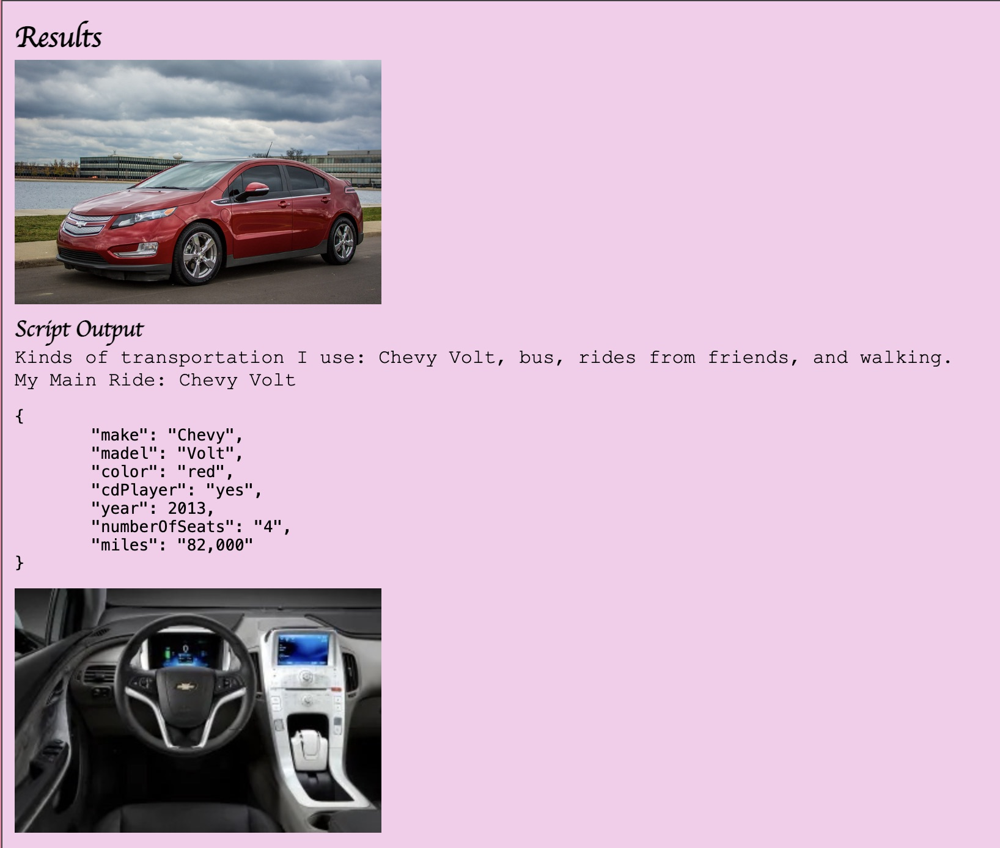
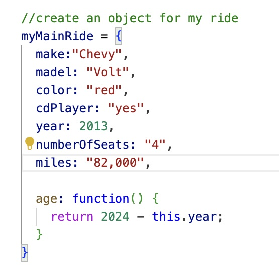
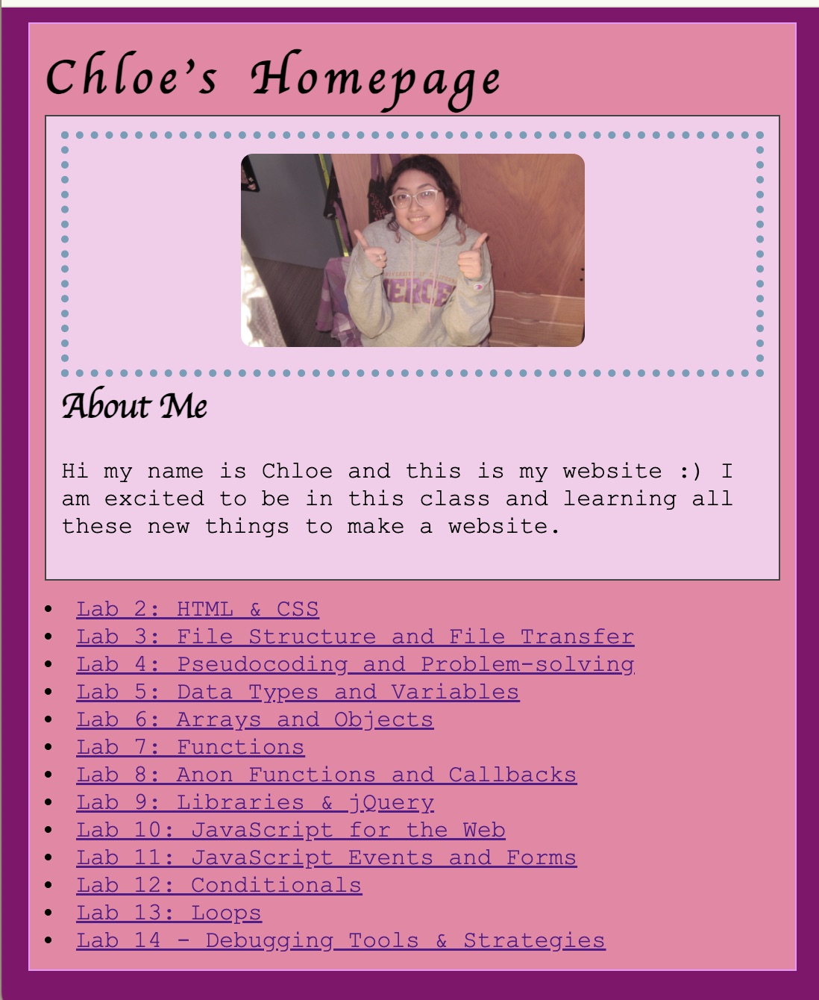
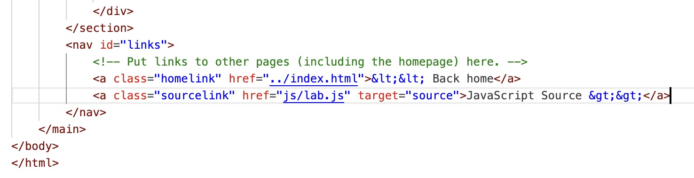
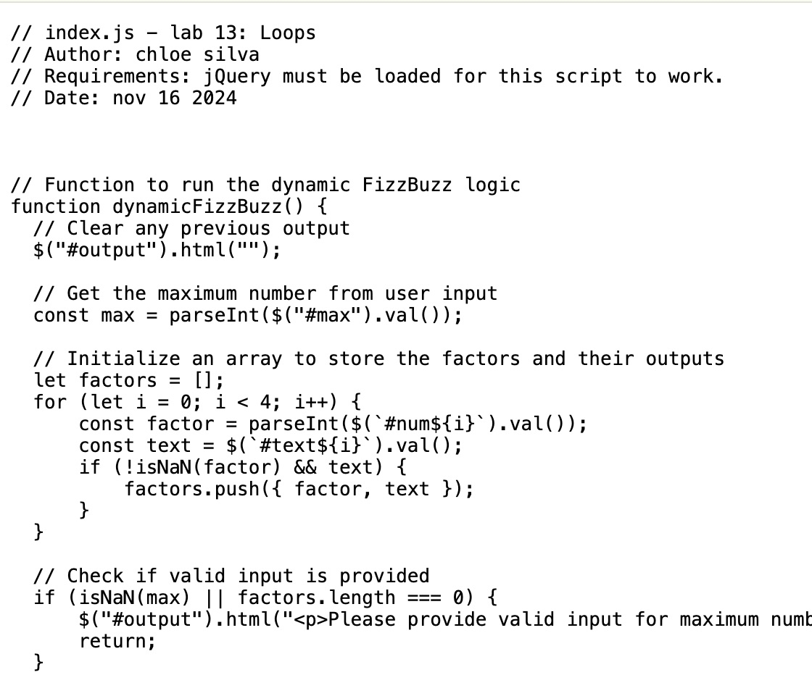

Lab 14 - Debugging Tools & Strategies
Challenge
With a partner, use your debugging knowledge to fix old assignments.
Problems
Trying to figure out which labs to fix and add onto. All my labs ran without problems so I was able to use this time to add more to them.
Reflection
One of the major things I did for old labs was adding images. Most did not have any images so now some they do. :) This was a pretty simple lab to do and fun to fix things around. I did some minor styling fixing and changing fonts and colors. Overall no major javascript needed to be fixed. Another thing that I added was links to see the javascript source code on the major javascript assignments. All the links work and show printed out javascript.
Results
I fixed parts of lab6 with the javascript and formating
    